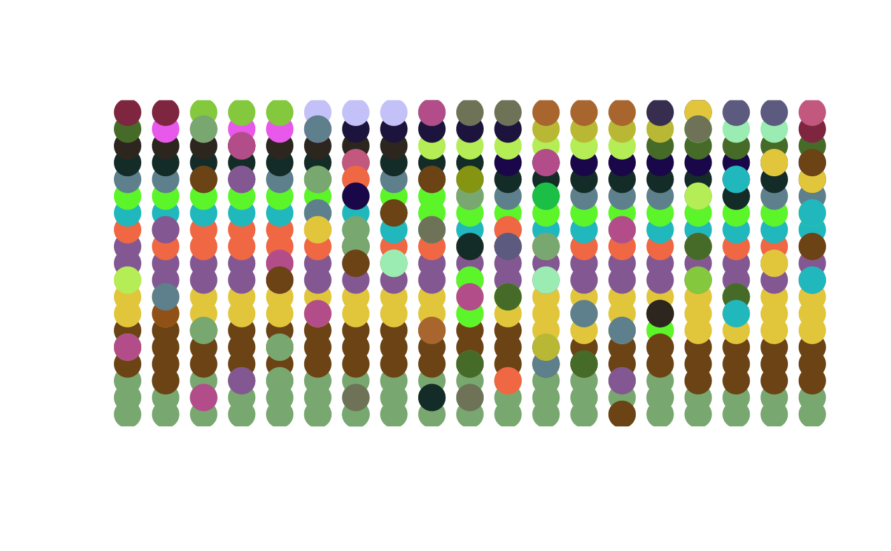

Animation of neutral ecological drift
display.untb.RdDisplays an ongoing simulation of neutral ecological drift using nice colours and a simple animation technique. Does not work as intended in RStudio: use base R
Usage
display.untb(start, gens=100, prob.of.mutate = 0, cex=3, individually
= TRUE, ask = FALSE, flash = FALSE, delay = 0, cols=NULL, ...)Arguments
- start
Starting ecosystem; coerced to class census. Usually, pass an object of class count; see examples. To start with a monoculture of size 10, use
start=rep(1,10)and to start with a system of maximal diversity (ie all singletons), usestart=1:10- gens
Number of generations to simulate
- prob.of.mutate
Probability of mutation. The default of zero corresponds to \(\theta=0\) and this means that any ecosystem will eventually become a monoculture (it is particularly instructive to watch this happen, especially with a starting ecosystem of maximal diversity\(\mbox{---}\)but be warned, this can take a long time, especially for ecosystems with a large number of individuals). Nonzero values mean that a nontrivial dominance-diversity curve will eventuate, although this too can take a long time to happen. Try a nonzero value of
prob.of.mutatewith monoculture start (useindividually=FALSEfor such experiments)- cex
The size of the dots used for plotting, defaulting to 3
- individually
Boolean, with default
TRUEmeaning that a timestep means the death of a single individual and the simultaneous birth of a new individual; andFALSEmeaning that a timestep refers to every individual in the system- ask
Boolean, with default
FALSEmeaning to display the generations autonomously, andTRUEmeaning to wait for the user to hit the “return” before proceeding- flash
Boolean, with
TRUEmeaning to indicate the site of a death/birth with a flashing ring; and defaultFALSEmeaning to omit the flashing ring. UseTRUEfor pedagogic purposes, possibly withaskset toTRUE, or a nonzerodelay. This option only kicks in ifindividuallyisTRUE- delay
Time delay between generations in seconds; meaningful whatever the value of
flashandindividually- cols
A vector of colours with default
NULLmeaning to choose them randomly. Useful for printing stills from a movie- ...
References
S. P. Hubbell 2001. “The Unified Neutral Theory of Biodiversity”. Princeton University Press.
Examples
data(butterflies)
display.untb(start=butterflies,prob=0, gens=1e2)
